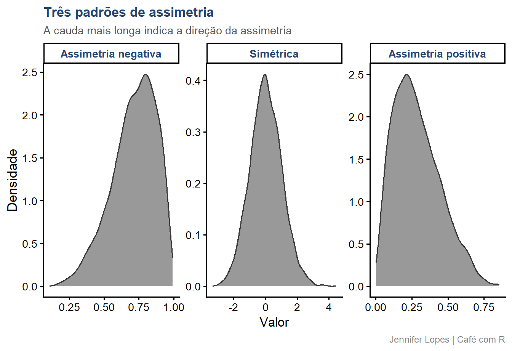
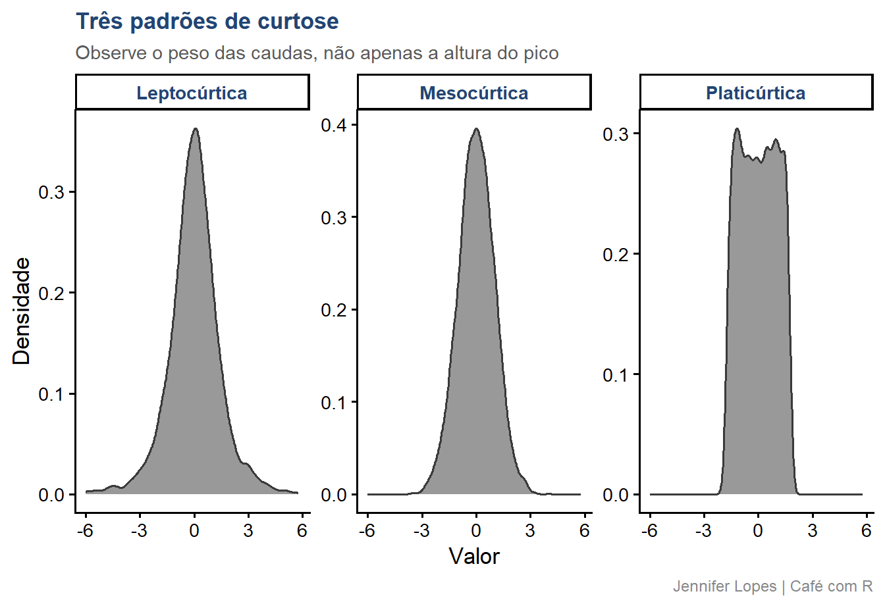
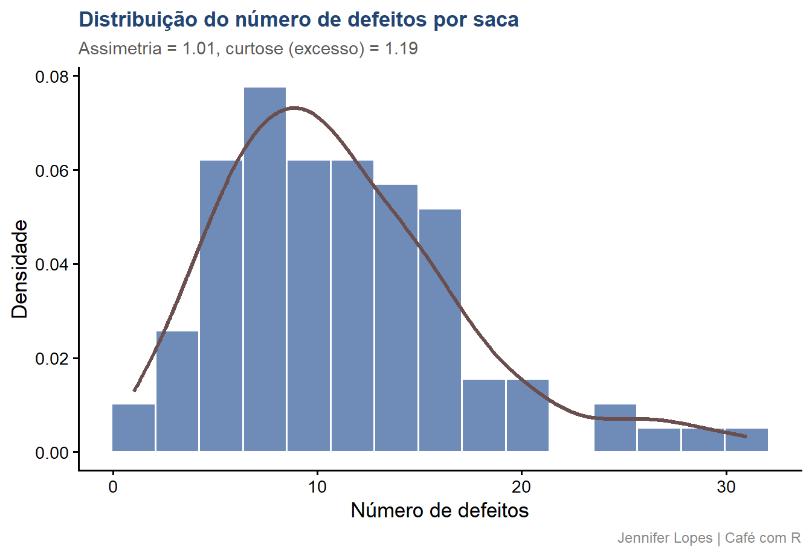

Code
amostra_defeitos |>
summarise(
media = mean(defeitos),
dp = sd(defeitos),
cv = (dp / media) * 100) |>
mutate(across(where(is.numeric), ~ round(.x, 2)))O que a forma da distribuição revela sobre os dados, com leitura visual de cada padrão
SITE OFICIAL > https://jenniferlopes.github.io/meu_site/
\[CV = \frac{s}{\bar{x}} \times 100\]
O CV% expressa a dispersão dos dados em termos relativos à média, o que permite comparar variáveis com unidades ou magnitudes diferentes.
Um CV% de 15% em uma variável com média 10 representa uma dispersão absoluta bem menor do que um CV% de 15% em uma variável com média 1000.
No contexto deste estudo: o CV% do número de defeitos por saca indica o grau de heterogeneidade da qualidade entre as sacas amostradas.
| Classificação | CV% | Uso típico |
|---|---|---|
| Baixo | Até 10% | Experimentos de campo bem controlados |
| Médio | 10% a 20% | Maioria dos experimentos agronômicos |
| Alto | 20% a 30% | Variáveis com maior variabilidade natural |
| Muito alto | Acima de 30% | Contagens, proporções, dados de campo aberto |
Atenção: essa classificação é uma referência da literatura agronômica, não uma regra universal. Variáveis de contagem, como número de defeitos, tendem a apresentar CV% mais alto por característica intrínseca, sem que isso indique falha experimental.
amostra_defeitos |>
summarise(
media = mean(defeitos),
dp = sd(defeitos),
cv = (dp / media) * 100) |>
mutate(across(where(is.numeric), ~ round(.x, 2)))# A tibble: 1 × 3
media dp cv
<dbl> <dbl> <dbl>
1 11.2 5.98 53.5\[g_1 = \frac{\frac{1}{n}\sum_{i=1}^{n}(x_i - \bar{x})^3}{\left(\frac{1}{n}\sum_{i=1}^{n}(x_i - \bar{x})^2\right)^{3/2}}\]
A assimetria, ou skewness, mede o grau e a direção do desvio de uma distribuição em relação à simetria perfeita.
Uma distribuição simétrica apresenta assimetria próxima de zero, com média e mediana coincidentes.
Assimetria negativa (cauda à esquerda): a maior parte dos dados se concentra à direita, e valores baixos puxam a cauda.
Assimetria positiva (cauda à direita): a maior parte dos dados se concentra à esquerda, e valores altos puxam a cauda.
Magnitude: valores entre menos 0,5 e 0,5 indicam assimetria aproximadamente simétrica. Valores entre 0,5 e 1, em módulo, indicam assimetria moderada. Valores acima de 1, em módulo, indicam assimetria forte.
set.seed(2026)
curvas_assimetria <- bind_rows(
tibble(valor = rbeta(5000, 5, 2), tipo = "Assimetria negativa"),
tibble(valor = rnorm(5000, 0, 1), tipo = "Simétrica"),
tibble(valor = rbeta(5000, 2, 5), tipo = "Assimetria positiva")) |>
mutate(tipo = factor(tipo, levels = c(
"Assimetria negativa", "Simétrica", "Assimetria positiva")))
amostra_defeitos |>
summarise(assimetria = skewness(defeitos, type = 2))# A tibble: 1 × 1
assimetria
<dbl>
1 1.01\[g_2 = \frac{\frac{1}{n}\sum_{i=1}^{n}(x_i - \bar{x})^4}{\left(\frac{1}{n}\sum_{i=1}^{n}(x_i - \bar{x})^2\right)^{2}} - 3\]
A curtose, na forma de excesso de curtose, mede o peso das caudas de uma distribuição em relação à distribuição normal, e não apenas a altura do pico central.
A distribuição normal tem excesso de curtose igual a zero, por definição.
Leptocúrtica (excesso de curtose positivo): caudas mais pesadas que a normal, maior probabilidade de valores extremos.
Mesocúrtica (excesso de curtose próximo de zero): caudas equivalentes às da distribuição normal.
Platicúrtica (excesso de curtose negativo): caudas mais leves que a normal, menor probabilidade de valores extremos.
Atenção: a curtose não deve ser lida apenas pela altura do pico central. Duas distribuições podem ter picos parecidos e curtoses muito diferentes, a diferença está no comportamento das caudas.
set.seed(2026)
curvas_curtose <- bind_rows(
tibble(valor = rt(5000, df = 3), tipo = "Leptocúrtica"),
tibble(valor = rnorm(5000, 0, 1), tipo = "Mesocúrtica"),
tibble(valor = runif(5000, -sqrt(3), sqrt(3)), tipo = "Platicúrtica")) |>
mutate(tipo = factor(tipo, levels = c(
"Leptocúrtica", "Mesocúrtica", "Platicúrtica")))
amostra_defeitos |>
summarise(curtose = kurtosis(defeitos, type = 2))# A tibble: 1 × 1
curtose
<dbl>
1 1.19resumo_forma <- amostra_defeitos |>
summarise(
assimetria = skewness(defeitos, type = 2),
curtose = kurtosis(defeitos, type = 2))
amostra_defeitos |>
ggplot(aes(x = defeitos)) +
geom_histogram(aes(y = after_stat(density)),
bins = 15, fill = cores_cafe["azul_claro"],
color = "white", alpha = 0.8) +
geom_density(color = cores_cafe["marrom"], linewidth = 1.2) +
labs(
title = "Distribuição do número de defeitos por saca",
subtitle = paste0("Assimetria = ", round(resumo_forma$assimetria, 2),
", curtose (excesso) = ", round(resumo_forma$curtose, 2)),
x = "Número de defeitos",
y = "Densidade",
caption = "Jennifer Lopes | Café com R") +
tema
Transformação: logarítmica ou raiz quadrada, quando o objetivo é aproximar a normalidade para uso de testes paramétricos.
Medida robusta: reportar mediana e IQR no lugar de média e desvio padrão, quando o objetivo é apenas descrever os dados.
Teste não paramétrico: alternativa direta quando a transformação não normaliza os dados de forma satisfatória, ou quando a interpretação na escala original é prioridade.
A escolha depende do objetivo da análise, descrever, comparar grupos ou modelar, e não existe opção única correta para toda situação.
Duas distribuições podem ter picos de altura semelhante e curtoses distintas.
A curtose é definida pelo comportamento das caudas, não pela altura central. Avalie sempre o histograma completo, não apenas a região de maior densidade.
Assimetria e curtose calculadas em amostras pequenas apresentam alta variabilidade de amostra para amostra.
Em amostras com menos de 30 observações, essas medidas devem ser interpretadas como indicativas, não como diagnóstico definitivo da forma da população.
Testes como o teste t assumem, entre outras condições, que os dados seguem distribuição aproximadamente normal.
Ignorar assimetria e curtose elevadas e aplicar o teste diretamente pode invalidar a conclusão, especialmente em amostras pequenas, onde o teorema central do limite ainda não garante aproximação à normalidade.
| Medida | O que revela | Valor de referência | Função no R |
|---|---|---|---|
| CV% | Dispersão relativa à média | Depende da área, ver tabela | sd()/mean()*100 |
| Assimetria | Direção e grau do desvio da simetria | Próximo de zero é simétrico | skewness() |
| Curtose (excesso) | Peso das caudas em relação à normal | Próximo de zero é mesocúrtica | kurtosis() |

Continue praticando e explorando.
Esta aula é parte do projeto Café com R. É open source. Use, compartilhe e adapte.
Que cada gole desperte uma nova ideia.
Que cada script abra uma nova conversa.
Que o Café com R se torne um ponto de encontro nosso.
SITE OFICIAL > https://jenniferlopes.github.io/meu_site/